第 6 章 透过率函数、透镜与光栅#
本章解决：常用光学元件如何以复振幅透过率进入传播模型——波前倾斜、二次相位聚焦、薄透镜以及振幅与相位光栅的数学表示，以及它们各自引入的频谱搬移与带宽变化。学完能把元件写成乘性相位或振幅因子，并依据其局部空间频率确定必要的采样密度。
6.0 本章导图#
6.1 倾斜(Tilt)#
仿真里想让光束"指向"某个方向,不用改传播器——给波前乘一个线性相位就行。设波前在 \(y\)–\(z\) 面内相对 \(z\) 轴倾斜 \(\alpha\)(图 6.1,虚线是倾斜后的波前,箭头是传播方向):虚线的几何表达式是 \(z = -y\tan\alpha\)。把它变成 \(z=0\) 面上的相位:波随时间沿 \(+z\) 推进时相位变得越来越负(4.3 节),所以符号要反号;波长 \(\lambda\) 对应 \(2\pi\) rad,用波数 \(k = 2\pi/\lambda\),倾斜的相位函数就是
更一般地,倾斜角 \(\alpha\) 相对 \(z\) 轴、方向由 \(x\)–\(y\) 面内的角 \(\theta\) 给定(图 6.2),用
其中 \(\theta = \tan^{-1}(y/x)\)。透过率函数因此是
注意 \(\alpha = \tan^{-1}(r/z)\),\(r\) 是观察面上从原点到**光束瞄准点(beam aiming point)**的径向距离——瞄准点在 \(r = z\tan\alpha\)(图 6.2)。
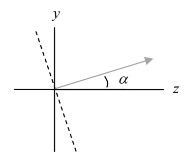
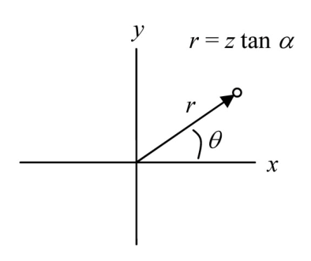
拓展:倾斜就是频谱平移——一行移位定理
式 (6.3) 的指数是 \(jk\hat{s}\cdot\vec{r}\)(\(\hat{s}\) 为倾斜方向单位矢量),即 \(e^{j2\pi f_0 x}\) 型的线性相位,其中 \(f_0 = \tan\alpha/\lambda\)(沿 \(x\) 分量)。由移位定理 \(\mathfrak{F}\{U_1\,e^{j2\pi f_0 x}\}(f_X) = G(f_X - f_0)\):倾斜不改变谱的形状,只把整幅频谱平移 \(\tan\alpha/\lambda\)。所以"倾角受限"的本质是"平移后的总带宽不能超出网格的 Nyquist 窗"——下面式 (6.5)/(6.6) 全是这一句话的代数化。
tilt 函数如下:
function[uout]=tilt(uin,L,lambda,alpha,theta)
% ===== 书 6.1 节:tilt 倾斜透过率函数(逐行忠实 + 中文注释) =====
% 书 6.1 节列出的函数(原书第 1-20 行),实现式 (6.3):
% t_a(x,y) = exp[jk(x cos(theta) + y sin(theta)) tan(alpha)]
% 即给波前加一个线性相位斜面,使光束朝 (cos(theta), sin(theta)) 方向
% 偏转 alpha 角(瞄准点 r = z tan alpha,图 6.2)。
% 要点:
% - theta 从 x 轴量起(书注释 "x axis 0");式 (6.2) 中 theta = atan(y/x)
% 只是"径向方向"的定义,函数里 theta 是自由参数;
% - 第 18-19 行用三个连续的句点(...)续行,一条表达式拆成两行;
% - 倾斜角受采样限制(式 6.6):alpha <= lambda*(1/(2*dx) - B1),
% 倾斜本质是把源频谱平移 tan(alpha)/lambda(式 6.4/6.5)。
% MATLAB/Python 差异:Python 版在 python/fourier/ch6/ch6_transmittance.py
% 的 tilt();坐标轴生成见公共模块 base.coords(Python 侧)。
% ------------- 以下为书原代码(第 1-20 行) -------------
% tilt phasefront
% uniform sampling assumed
% uin - input field
% L - side length
% lambda - wavelength
% alpha - tilt angle
% theta - rotation angle (x axis 0)
% uout - output field
[M,N]=size(uin); %get input field array size
dx=L/M; %sample interval
k=2*pi/lambda; %wavenumber
x=-L/2:dx:L/2-dx; %coords
[X,Y]=meshgrid(x,x);
uout=uin.*exp(j*k*(X*cos(theta)+Y*sin(theta))...
*tan(alpha)); %apply tilt
end
# ===== 书 6.1 节:tilt(与 matlab/fourier/ch6/tilt.m 逐行对应) =====
def tilt(uin, L, lam, alpha, theta):
"""倾斜透过率(式 6.3):t = exp[jk(x cosθ + y sinθ) tanα]。
给波前加线性相位斜面,光束朝 (cosθ, sinθ) 方向偏转 α,
瞄准点 r = z tanα(图 6.2)。倾斜把源频谱平移 tanα/λ(式 6.4/6.5),
因此受带宽判据 α ≤ λ(1/(2Δx1) − B1)(式 6.6)限制。
"""
M, N = uin.shape # 书 11 行
dx = L / M # 书 12 行
k = 2 * np.pi / lam # 书 13 行
x, _ = coords_local(L, M) # 书 15 行:空间坐标(居中)
X, Y = np.meshgrid(x, x) # 书 16 行
uout = uin * np.exp(1j * k * (X * np.cos(theta) + Y * np.sin(theta))
* np.tan(alpha)) # 书 18-19 行:apply tilt
return uout
测试方法:回到 5.3 节的 sqr_beam,Save As 成 sqr_beam_tilt,在传播调用之前插入:
其余与 sqr_beam 相同(仍用 propTF 传到 \(z=2000\) m)。运行后观察面辐照度如图 6.3——光斑沿 45° 方向平移到了 \(r = z\tan\alpha = 0.1\) m 处。
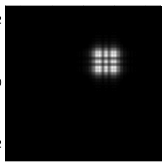
本章 Python 复现(同参数)还做了两个定量检查(\(L_1=0.5\) m、\(M=250\)、\(\Delta x_1=2\) mm):
- 频谱平移(式 6.5):对源场做居中 2D FT,谱峰从 \((0,0)\) 移到 \((70.0, 70.0)\) cyc/m,理论 \((\tan\alpha/\lambda)(\cos\theta,\sin\theta) = (70.7, 70.7)\) cyc/m——差在网格分辨率 \(1/L = 2\) cyc/m 内;
- 质心平移:观察面辐照度质心 \((69.8, 69.8)\) mm,理论 \(z\tan\alpha/\sqrt{2} = 70.7\) mm。
采样限制同样存在。倾斜够大、把观察面上的光斑平移出网格边界,就要出事(习题 6.1)。分析方法:tilt 是作用在源场 \(U_1\) 上的线性相位指数;设单轴倾斜,对源场变换用移位定理:
其中 \(G_1 = \mathfrak{F}\{U_1\}\)。若源带宽为 \(B_1\),谱整体平移之后,离开源面的场的组合有效带宽是
把 \(B_1^{+T}\) 代进表 5.3 的传播判据里 \(B_1\) 的位置。比如 \(\Delta x \leq \lambda z/L\) 时传播判据是 \(B_1^{+T} \leq 1/(2\Delta x)\)。代入式 (6.5)、整理,得
其中假定 \(\alpha\) 是小角。关于这个判据的三条评注:
- (a) 结果是近似的:式 (6.5)/(6.6) 没有计入源与传播器相位的具体相互作用——两者的影响可能部分抵消。
- (b) \(\Delta x > \lambda z/L\)("较短距离"):在倾角 \(\alpha\) 还没逼近界限之前,观察面就可能出现"fringing"(条纹)与不对称等各种 artifacts。
- © \(\Delta x < \lambda z/L\)("较长距离"):把式 (6.6) 里的 \(1/2\Delta x_1\) 换成 \(L_1/(2\lambda z)\)。
sqr_beam_tilt 例子:\(\lambda = 0.5\times10^{-6}\) m、\(\Delta x_1 = 2\times10^{-3}\) m,书取 \(B_1 \approx 98\) cycles/m(称"由式 (5.10) 算出"),倾角判据给出 \(\alpha \leq 7.6\times10^{-5}\) rad。
原书前后不一致:B₁ ≈ 98 从哪来?
5.4.3 节式 (5.10) 算出的 \(B_1 = 5.98/w = 5.98/0.051 = 117.3\) cycles/m;而 \(5/w = 98.0\) cycles/m 是 2.2 节的圆整口径。本节说"B₁ ≈ 98 由式 (5.10) 算出",两处口径对不上——98 对应的是 5/w。按 117.3 重算:式 (6.6) 给 \(\alpha \leq 6.6\times10^{-5}\) rad,6.2 节的 \(|z_f| \geq 768\) m(书值 671 m)。书沿用 98,笔记的数值验证两条都给。
试验:取 theta=0、alpha=7.6e-5,光束应贴近阵列边缘;看幅度剖面,"wrap-around"效果明显——能量从网格对面一侧进来(周期延拓!)。要让图样跨网格边界劈开,取 \(\alpha = \lambda/2\Delta x_1 = 1.25\times10^{-4}\)。再试一些更短/更长的传播距离,观察倾角增大时光束怎么变。一般来说,倾角应远在式 (6.6) 界内;典型仿真里最大可用倾角相当小——这与菲涅耳传播器的傍轴本性一致。
本章 Python 复现同一组试验(\(\theta = 0\)):
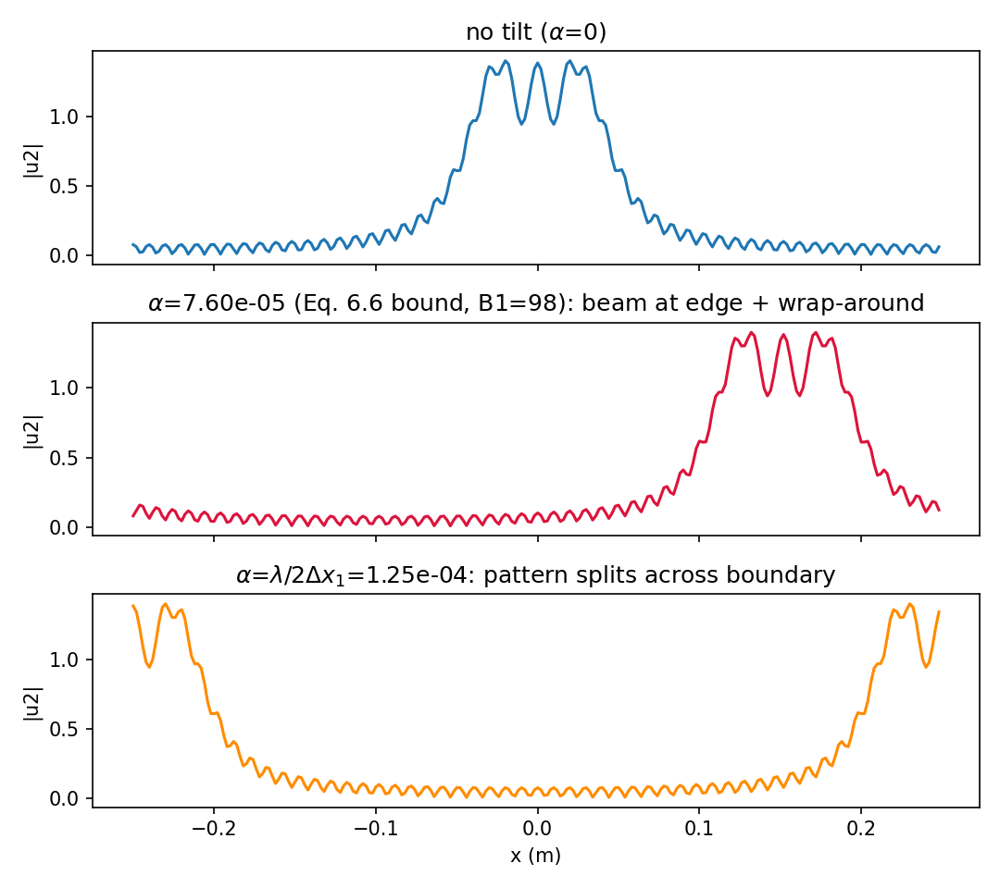
- \(\alpha = 7.6\times10^{-5}\):光束中心移到 \(z\tan\alpha = 152\) mm(半网格 250 mm 的 61%),强度剖面在 \(-x\) 对侧边缘出现周期回绕能量(对侧边缘能量占比 5.7%);
- \(\alpha = 1.25\times10^{-4}\):光束中心 \(z\tan\alpha = 250\) mm 恰在边界上,图样被劈成两半。
6.2 聚焦(Focus)#
另一个有用操作:让光束会聚("focusing")或发散("defocusing")。球面波前(图 6.4)会在 \(z\) 轴上 \(z_f\) 处会聚。照 tilt 的路子,找 \(z=0\) 面上的会聚相位前:
\(x\) 或 \(y\) 增大时相位更负——说明离轴波前在时间上超前于轴上波前(4.3 节)。所以式 (6.7) 的负号对应会聚波前(图 6.4),正号对应发散波前。借 4.4.2 节菲涅耳衍射的二项式近似,抛物面相位前近似球面:
focus 的透过率函数因此是
这与式 (4.23) 菲涅耳脉冲响应 \(h\) 里的相位 chirp 同形,只是指数符号为负——\(h\) 把波"散开",focus 把波"收拢"。
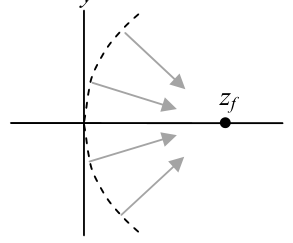
原书记号
透过率记号在原书里前后不统一:式 (6.3) 写 \(t_a\),式 (6.9) 起写 \(t_A\)。笔记统一用 \(t_A\),含义相同(下标指 amplitude transmittance)。
focus 的 MATLAB 函数:
function[uout]=focus(uin,L,lambda,zf)
% ===== 书 6.2 节:focus 聚焦/发散透过率函数(逐行忠实 + 中文注释) =====
% 书 6.2 节列出的函数(原书第 1-18 行),实现式 (6.9):
% t_A(x,y) = exp[-j (k/(2*zf)) (x^2 + y^2)]
% zf > 0 会聚(焦点在源面前方 z = zf 处);zf < 0 发散(虚焦点)。
% 这是与菲涅耳脉冲响应 h(式 4.23)同形的相位 chirp,只是指数符号为负
% ——h 让波前发散开去,focus 把波前向焦点收拢。
% 采样限制(式 6.11):|zf| >= (D1/2/lambda) * (1/(2*dx) - B1)^(-1),
% 即聚焦 chirp 会加宽带宽,大约增加 D1/(2*lambda*|zf|)(式 6.10)。
% MATLAB/Python 差异:Python 版在 python/fourier/ch6/ch6_transmittance.py
% 的 focus();X.^2 在 numpy 里写作 X**2。
% ------------- 以下为书原代码(第 1-18 行) -------------
% converging or diverging phase-front
% uniform sampling assumed
% uin - input field
% L - side length
% lambda - wavelength
% zf - focal distance (+ converge, - diverge)
% uout - output field
[M,N]=size(uin); %get input field array size
dx=L/M; %sample interval
k=2*pi/lambda; %wavenumber
%
x=-L/2:dx:L/2-dx; %coords
[X,Y]=meshgrid(x,x);
uout=uin.*exp(-j*k/(2*zf)*(X.^2+Y.^2)); %apply focus
end
# ===== 书 6.2 节:focus(与 matlab/fourier/ch6/focus.m 逐行对应) =====
def focus(uin, L, lam, zf):
"""聚焦/发散透过率(式 6.9):t = exp[-j(k/2zf)(x²+y²)]。
zf > 0 会聚(实焦点),zf < 0 发散(虚焦点)。
与菲涅耳脉冲响应 h(式 4.23)同形的 chirp,指数符号为负。
聚焦加宽源带宽约 D1/(2λ|zf|)(式 6.10),故有式 (6.11) 的 |zf| 下界。
"""
M, N = uin.shape # 书 10 行
dx = L / M # 书 11 行
k = 2 * np.pi / lam # 书 12 行
x, _ = coords_local(L, M) # 书 14 行
X, Y = np.meshgrid(x, x) # 书 15 行
uout = uin * np.exp(-1j * k / (2 * zf) * (X ** 2 + Y ** 2)) # 书 17 行
return uout
在 sqr_beam 上试(新文件 sqr_beam_focus),传播调用前插入并运行:
结果见图 6.5——相当前的一个焦点!本例焦距与传播距离相同(\(z_f = z = 2000\) m),所以预期小光斑。这个图样其实是一幅缩放了的夫琅禾费图样(见 6.3 节)。试别的焦距——能不能让图样扩展到铺满观察面网格?负的 focus 值把焦点放到平面背后的虚位置,产生发散波(图 6.6),也试试。
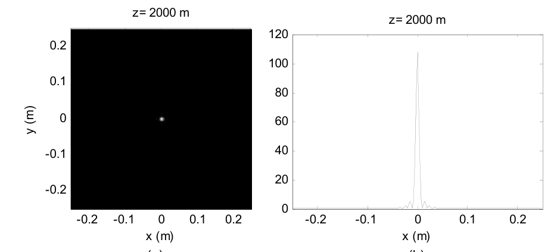
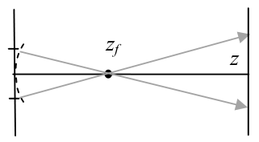
原书图 6.6 子图标号
图 6.6 的两个子图在原书里都印着 "(b)"——左图(会聚,焦点 \(z_f\))应为 (a)。排版笔误。
"缩放夫琅禾费"不是一句虚话——本章 Python 实测把它钉死:对同一源场,focus(zf=z) + propTF(z) 与 propFF(u1, z=f) 的辐照度逐点相等(最大相对差 \(5.3\times10^{-16}\),机器精度;propFF 观察面边长 \(L_2 = \lambda z/\Delta x_1 = 0.5\) m,恰与源面同网格)。原因:焦距等于传播距离时,观察面上传播自带的二次相位 \(e^{jk r^2/2z}\) 恰好被 focus chirp 消掉,剩下的正是夫琅禾费场(式 6.18 取 \(f=z\))。实测焦斑峰值 \(I_2 = 108.2\)(书图 6.5(b) 约 108),半高全宽约 8 mm。
给源场乘式 (6.9) 会加宽源带宽:带宽增量约为"源支撑半径 \(D_1/2\) 除以 \(\lambda|z_f|\)",组合有效带宽近似
令 \(B_1^{+F} \leq 1/(2\Delta x)\) 并整理,得焦距下界:
与倾角判据一样,式 (6.11) 是近似的——源与传播器相位的精确相互作用没有计入。
sqr_beam_focus 例子:\(\lambda = 0.5\times10^{-6}\) m、\(\Delta x_1 = 2\times10^{-3}\) m、\(B_1 \approx 98\) cycles/m、\(D_1 = 0.102\) m,给出 \(|z_f| \geq 671\) m(用 \(B_1 = 117.3\) 则为 768 m)。用代码检验这个条件:\(z_f = -671\) m 时波发散,观察面上明显推过阵列边界;\(z_f = +671\) m 时图样更小——光束在到达观察面前先过了焦点(图 6.6)。图样看似合理,但相位混叠误差刚好开始在阵列边缘冒头——看观察面场的 unwrap 相位剖面就能发现。
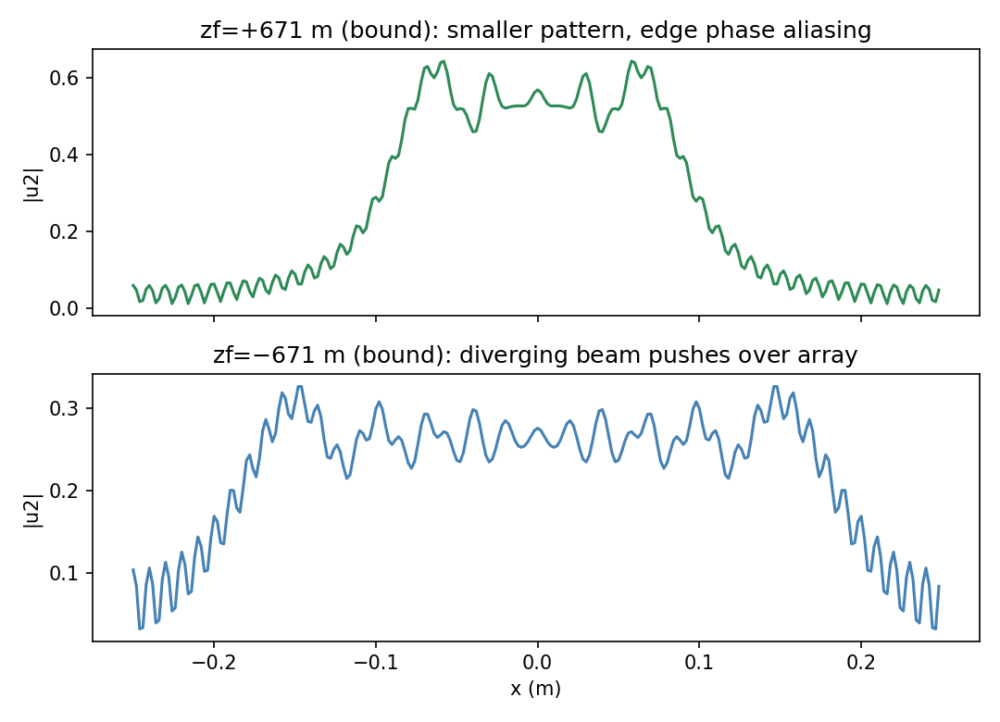
6.3 透镜(Lens)#
透镜是利用折射来会聚或发散光的元件。理想简单透镜的透过率函数为(引 Goodman):
其中 \(f\) 是焦距(focal length),\(P(x,y)\) 是瞳函数(pupil function)。这就是 focus 的复指数把 \(z_f\) 换成 \(f\):正焦距把平面波输入变成会聚波前,负焦距变发散。瞳函数管透镜的物理尺寸——可用来收集光的开口。最常见的瞳函数是圆:
\(w_L\) 是透镜孔径半径(别与出透镜波前的曲率半径混淆)。
circ 的两种约定(全书坑,这里落地)
式 (6.13) 按 Goodman 约定书写:circ 的宗量是"半径归半径",即 \(P=\mathrm{circ}(r/w_L)\) 表示半径 \(w_L\) 的圆孔。书的附录 C.1 代码 out=abs(r)<=1 也是这个约定。但表 1.2 的 circ 印刷定义对应"宗量 = r/(2×半径)"(ch1 勘误,两种约定差 2 倍半径)——同一本书里两套并存。实现时:本笔记公共模块 base.circle(X, Y, R) 画半径 R 圆盘,所以透镜瞳写 circle(X, Y, wL)、波带片写 circle(X, Y, w)(式 6.29 同理);若照抄表 1.2 的定义实现式 (6.13),孔径会大出一倍。
并不是所有场景都能像 focus 例子那样,把式 (6.12) 直接放进菲涅耳传播。因为焦距 \(f\) 服从与 \(z_f\) 相同的判据(式 6.11),而 \(f\) 往往很短,需要巨量样本。设平面波入射(\(B_1 \to 0\)),对式 (6.11) 做代数变换:
其中 \(D_L = 2w_L\)。比值 \(|f|/D_L\) 叫焦比(focal ratio),或 f 数(f-number),记 \(f/\#\)。代入后:
实用透镜的 \(f/\#\) 大约从 2 到 50,直径 \(2w_L\) 从几毫米到 100 mm 上下。取典型值 \(f/\#=10\)(常写 f/10)、直径 25 mm、可见光 \(\lambda = 0.5\times10^{-6}\) m,式 (6.15) 给出
而且做菲涅耳传播时,阵列边长 \(L\) 至少要跨透镜直径。于是建模这枚透镜所需的线性样本数
相当大的阵列。所以用菲涅耳传播器直接建模透镜,通常只对大 \(f/\#\) 才实际可行。
小 \(f/\#\) 也不是没救。设入射透镜的场是 \(U_1(x_1,y_1)\),出透镜的场是 \(U_1(x_1,y_1)t_A(x_1,y_1)\)。把它作为 \(U_1(x_1,y_1)\) 代入式 (4.25),令 \(z = f\),积分里的 chirp 函数相消,结果是
式 (6.18) 表明:理想正透镜焦面上的场,就是入射场取 \(z = f\) 的夫琅禾费图样。所以想求正透镜焦面的场或辐照度——包括小 \(f/\#\) 的透镜——用上一章的 propFF、把 \(z\) 换成 \(f\) 即可。
取 f/10 透镜的参数,设 \(U_1\) 是单位振幅平面波,选 \(M = 250\)、\(L = 250\) mm,用 propFF 生成焦面辐照度(习题 6.4),结果见图 6.7。理想圆形透镜形成的聚焦辐照度图样就是著名的 Airy 图样(Airy pattern)。
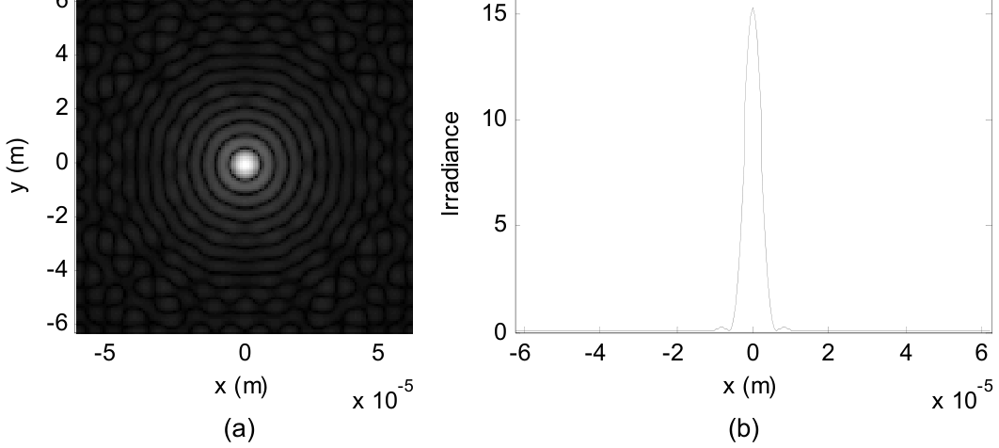
本章 Python 数值验证(习题 6.4 的解析推导一并给出):单位振幅平面波照满半径 \(w_L\) 的圆瞳,焦面场即 \(D_1\) 面积定标的 jinc,\(I_2(r) = I_0\,[2J_1(v)/v]^2\),\(v = \pi D r/(\lambda f)\),\(D = 2w_L\),峰值 \(I_0 = (\pi w_L^2/\lambda f)^2\):
| 量 | 解析 | 数值(propFF) |
|---|---|---|
| 峰值 \(I_0\) | \(1.542\times10^7\) | \(1.530\times10^7\)(差 0.76%) |
| 第一零点 \(1.22\lambda f/D\) | 6.10 μm | 6.0 μm(0.5 μm 网格的最近样本) |
| 瞳直径减半(习题 6.4b) | 零点 ×2 = 12.2 μm | 13.0 μm;峰值降为 1/16 = 0.0612 |
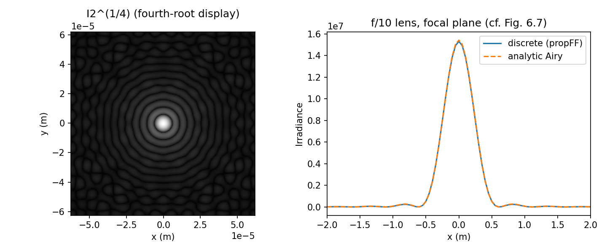
拓展:衍射限斑大小只看 f/#
Airy 第一零点 \(1.22\lambda f/D = 1.22\,\lambda\,(f/\#)\)——与焦距、口径各自无关,只由 \(f/\#\) 决定。f/10、\(\lambda=0.5\ \mu\text{m}\) 永远给 6.1 μm 的衍射限斑。这也是"缩小瞳径让斑变大"(习题 6.4b,零点翻倍)和"大口径长焦与大口径短焦同斑"两件事的统一出处。
一个特例值得单独记:源场放在正透镜的前焦面上(距透镜 \(f\),图 6.8)。此时焦面上的场为(引 Goodman):
前导的 chirp 相位因子没有了——焦面场是输入场的缩放傅里叶变换。瞳函数的宗量 \((x_1+x_2,\,y_1+y_2)\) 计入了渐晕(vignetting):输入场里离轴点因瞳径有限而丢光。透镜瞳相对输入场支撑越大,渐晕越弱。
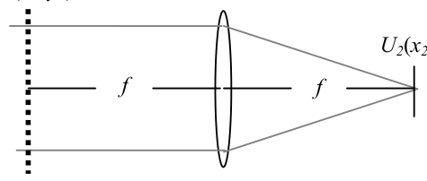
拓展:式 (6.19) 的两个细节
- 前导相位:把"传播 f → 透镜 → 传播 f"严格走一遍(两次菲涅耳传播各带 \(e^{jkf}\),透镜消掉面内 chirp),得到的整体相位是 \(e^{j2kf}/(j\lambda f)\),而书从式 (6.18) 改写过来只写了 \(e^{jkf}\)。整体相位不影响辐照度,两种写法算出的 \(I_2\) 完全一样。
- 渐晕宗量为什么是 \(x_1+x_2\):来自前焦面上 \((x_1,y_1)\) 点、沿频率分量 \(f_{X1}\) 方向的那根光线,打到透镜面上的高度是 \(x_1 + \lambda f f_{X1}\);而 \(f_{X1}\) 分量最终落到焦面 \(x_2 = \lambda f f_{X1}\) 处,所以透镜面上这根光线的高度正是 \(x_1 + x_2\)——瞳在这一点截不截得住,决定这个 (源点, 频率) 组合能不能贡献光。
6.4 光栅与周期函数(Gratings and Periodic Functions)#
**光栅(grating)**是具有空间周期结构的元件。入射光在结构的透射或反射中发生衍射,光的颜色(波长分量)在离光栅一定距离处被空间上分开。光栅常用于光谱仪(看光信号的波长谱)或分光光度计(测元件的光谱特性)。光栅的衍射图样通常在夫琅禾费区观察。
6.4.1 余弦振幅例子#
传统光栅在表面刻槽,对入射波施加振幅和/或相位扰动。为了演示周期函数建模,先看一个振幅透过率函数:
图 6.9 是它的一维剖面。光栅定义在 \(D_1\times D_1\) 的二维面内,余弦图案只随 \(x\) 变化、周期为 \(P\),通常 \(P \ll D_1\)。单位振幅平面波照明时源场 \(U_1(x_1,y_1) = t_A(x_1,y_1)\),夫琅禾费图样用焦距 \(f\) 的透镜(或反射镜)产生。
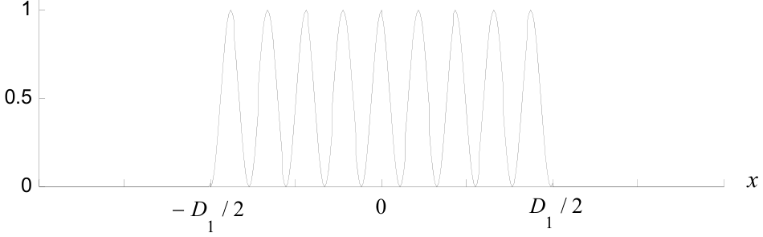
光栅在脚本 grating_cos 里仿真,前半部分:
% ===== 书 6.4.1 节:grating_cos 余弦振幅光栅例子(逐行忠实 + 中文注释) =====
% 参数:lambda=0.5 um、f=0.5 m、P=1e-4 m(光栅周期)、D1=1.02e-3(光栅边长,
% 跨 rect 函数 D1/dx1=51 个样本——奇数,与 rect 定义一致)、
% L1=1e-2 m、M=500。跨每个余弦周期的样本数 M*P/L1=5(式 6.21,"okay")。
% 图 6.10:(a) 源面辐照度(显示分辨率看不出周期结构);(b) 夫琅禾费图样
% (三次方根拉伸);(c) x 剖面——中央零阶 + ±1 一阶峰(位置 ±lambda*f/P=±2.5 mm)。
% 解析对照:式 (6.22)/(6.23) 的 FT 与式 (6.24) 的夫琅禾费场(丢掉前导复指数,
% 只算辐照度,"but don't forget 1/lambda*z",这里 z 就是 f)。
% 波长分离试验(图 6.11):换 lambda=0.6e-6 重跑,一阶峰移到 ±3.0 mm;
% 两条曲线的 x2 网格不同,不能用同一组 x2 画图(书特别提醒)!
% MATLAB/Python 差异:Python 版 ch6_gratings.py 的 grating_cos 部分;
% sinc 为信号处理工具箱函数,无工具箱可自定义 sinc_v=@(x) sin(pi*x)./(pi*x)。
% ------------- 以下为书原代码(第 1-21 行 + 书给的分析代码) -------------
% grating_cos diffraction grating example
lambda=0.5e-6; %wavelength
f=0.5; %focal distance
P=1e-4; %grating period
D1=1.02e-3; %grating side length
L1=1e-2; %array side length
M=500; %# samples
dx1=L1/M;
x1=-L1/2:dx1:L1/2-dx1; %source coords
[X1,Y1]=meshgrid(x1,x1);
% Grating field and irradiance
u1=1/2*(1-cos(2*pi*X1/P)).*rect(X1/D1).*rect(Y1/D1);
% Fraunhofer pattern
[u2,L2]=propFF(u1,L1,lambda,f);
dx2=L2/M;
x2=-L2/2:dx2:L2/2-dx2; y2=x2;%obs coords
I2=abs(u2).^2;
# ===== 书 6.4.1 节:grating_cos(完整脚本见 python/fourier/ch6/ch6_gratings.py) =====
def run_grating_cos(lam=0.5e-6, M=500, D1=1.02e-3, P=1e-4, f=0.5, L1=1e-2):
"""书 6.4.1 节 grating_cos(式 6.20 + propFF + 式 6.24 解析)。"""
dx1 = L1 / M
x1, _ = coords(L1, M)
X1, Y1 = np.meshgrid(x1, x1)
u1 = 0.5 * (1 - np.cos(2 * np.pi * X1 / P)) * \
np.where(np.abs(X1) <= D1 / 2, 1.0, 0.0) * \
np.where(np.abs(Y1) <= D1 / 2, 1.0, 0.0) # 式 (6.20)
u2, L2 = propFF(u1, L1, lam, f)
dx2 = L2 / M
x2, _ = coords(L2, M)
I2 = np.abs(u2) ** 2
# 式 (6.24)(丢前导复指数,只算辐照度;书代码逐行对应)
lf = lam * f
X2, Y2 = np.meshgrid(x2, x2)
u2a = (1 / lf) * D1 ** 2 / 2 * sinc(D1 / lf * Y2) * \
(sinc(D1 / lf * X2) - 0.5 * sinc(D1 / lf * (X2 + lf / P))
- 0.5 * sinc(D1 / lf * (X2 - lf / P)))
I2a = np.abs(u2a) ** 2
return x1, u1, x2, I2, I2a, lf, P, f, D1
关键前提:周期函数必须采够。跨一个周期(长度 \(P\))的样本数是
grating_cos 里 \(MP/L_1 = 5\)——每个余弦周期 5 个样本,"okay"(满足采样定理至少要 2 个)。\(L_1\)、\(D_1\)、\(P\)、\(M\) 的取值同时照顾了夫琅禾费图样的显示;\(D_1 = 1.02\times10^{-3}\) 让跨 rect 的样本数 \(D_1/dx_1 = 51\) 为奇数,与 rect 函数的定义一致。透镜焦距 \(f = 0.5\) m 是任选的。图 6.10 给出源面辐照度 \(I_1\)、观察面辐照度 \(I_2\) 与观察面 x 剖面:中央特征叫零阶(zero order),两侧是 \(-1\) 与 \(+1\) **一阶(first-order)**峰。
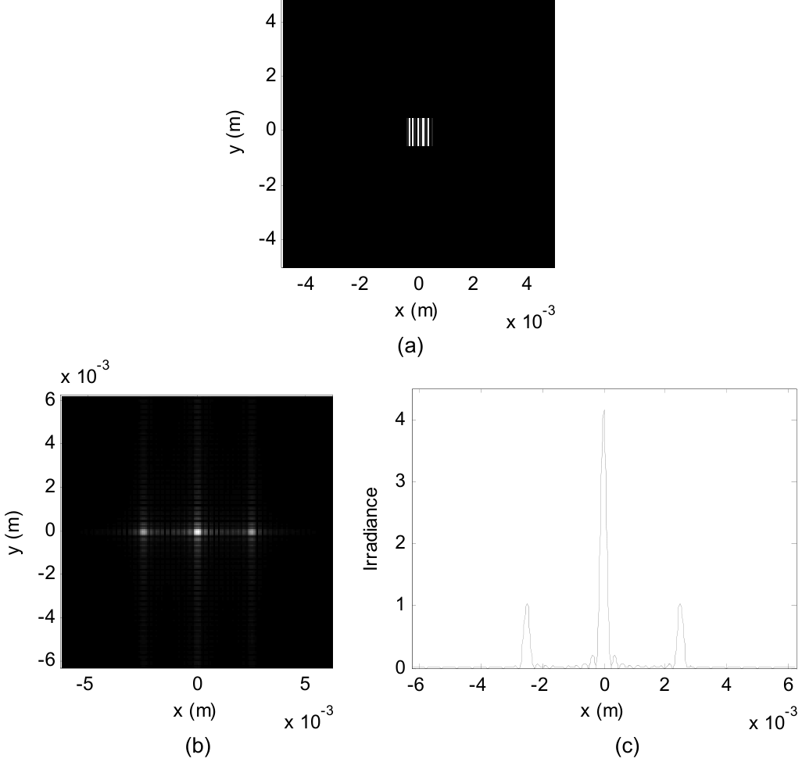
仿真对不对,拿解析夫琅禾费图样对一下。先求源场的傅里叶变换:
再做卷积:
代入 \(x_2/\lambda f \to f_{X1}\)、\(y_2/\lambda f \to f_{Y1}\) 并乘上各前导因子,得夫琅禾费场:
辐照度是式 (6.24) 的模平方。书给的解析评估代码:
%analytic
[X2,Y2]=meshgrid(x2,y2);
lf=lambda*f;
u2a=(1/lf)*D1^2/2*sinc(D1/lf*Y2)...
.*(sinc(D1/lf*X2)-1/2*sinc(D1/lf*(X2+lf/P))...
-1/2*sinc(D1/lf*(X2-lf/P)));
I2a=abs(u2a).^2;
夫琅禾费图样的前导复指数没有写进代码——只看辐照度,但别忘了 1/λz(这里 \(z = f\))。跑一下,离散与解析曲线应当重合。本章 Python 实测:最大相对差 0.258%;一阶峰位置 \(\pm\lambda f/P = \pm 2.50\) mm,峰高约 1.04 vs 零阶 4.16(书图 6.10© 同为 ~1 / ~4.2 / ~1)。
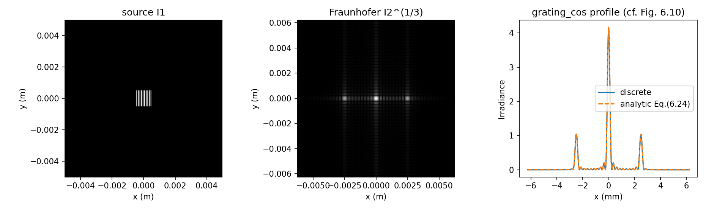
光栅的主要应用是分光。图 6.11 把 \(\lambda = 0.5\ \mu\text{m}\) 与 \(0.6\ \mu\text{m}\) 的剖面叠在一起:一阶峰明显分开(\(\pm2.5\) mm vs \(\pm3.0\) mm)。做法:先跑一个波长,把 \(I_2\)、\(x_2\) 存进临时数组(如 I2p5=I2; x2p5=x2;),换波长重跑,再在命令窗口对两条曲线执行 plot。两个波长的 x2 网格不同(\(L_2 = \lambda f/\Delta x_1\) 分别 12.5 mm 与 15.0 mm)——别共用同一组 x2 向量!"照亮"更大的光栅面积会收窄各阶、提高光谱分辨率——把 \(D_1\) 加大就能验证。
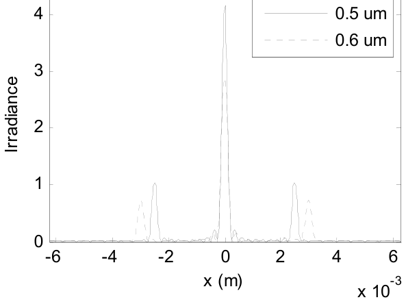
6.4.2 方波振幅例子#
另一种光栅见图 6.12,透过率函数:
\(P\) 是 x 方向延展的方波振幅图案的周期,限于 \(D_1\times D_1\) 面内。注意卷积里的 1/P 归一:它让每个 comb delta 的权重是"占空比意义上的平均值",这样各阶权重直接是 \(\frac{1}{2}\mathrm{sinc}(n/2)\)、零阶权重 \(\frac{1}{2} = 50\%\) 占空比的均值。
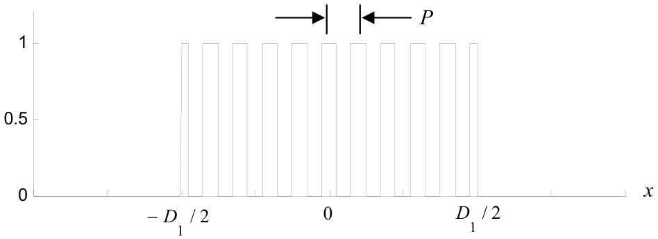
脚本 grating_sqr(只示一部分):
% ===== 书 6.4.2 节:grating_sqr 方波振幅光栅例子(逐行忠实 + 中文注释) =====
% 透过率(式 6.25):t_A = [rect(x1/(P/2)) * (1/P)comb(x1/P)] rect(x1/D1) rect(y1/D1)
% ——方波 = 宽 P/2 的 rect 与周期 P 的梳做一维卷积,再乘 D1 x D1 窗。
% 参数:lambda=0.5 um、f=0.5 m、P=1e-4 m、D1=1e-3 m、L1=1e-2 m、M=1000。
% dx1=1e-5 m,P/dx1=10(整数!ucomb 落位的前提),P/2=5(奇数个样本跨
% 每个 rect,与 rect 定义一致)。
% 卷积定标(书原话):结果不需要再乘定标因子——(a) ifft 已为一次 fft 正确
% 定标(例如 fr);(b) 每个单位样本 delta 表现得像面积 1/dx1,恰好抵消
% 第二个 fft 带来的 dx1。repmat 把一维 ux 快速铺满二维 u1 的每一行。
% 图 6.13:与余弦光栅类似但多出高阶峰(奇数阶 n=±1,±3,±5;偶数阶被
% sinc(n/2) 的零点压掉)。解析对照:式 (6.27),n=-5:5 共 11 项足够。
% MATLAB/Python 差异:Python 版 ch6_gratings.py 的 grating_sqr 部分;
% ucomb 来自附录 C.5(本目录提供 ucomb.m);书末尾"Implement this code
% at the end of sqr_grating"中的 sqr_grating 是 grating_sqr 之笔误。
% ------------- 以下为书原代码(第 1-19 行 + 书给的解析代码) -------------
% grating_sqr diffraction grating example
lambda=0.5e-6; %wavelength
f=0.5; %focal distance
P=1e-4; %grating period
D1=1e-3; %grating side length
L1=1e-2; %array side length
M=1000; %# samples
dx1=L1/M;
x1=-L1/2:dx1:L1/2-dx1; %source coords
[X1,Y1]=meshgrid(x1,x1);
% construct grating field
fc=fft(fftshift(ucomb(x1/P)));
fr=fft(fftshift(rect(x1/(P/2))));
ux=ifftshift(ifft(fc.*fr)); %1D conv rect & comb
u1=repmat(ux,M,1); %replicate to 2D
u1=u1.*rect(X1/D1).*rect(Y1/D1); %set size
... (then apply the Fraunhofer propagator) %书原文此处省略——实际脚本:
[u2,L2]=propFF(u1,L1,lambda,f);
dx2=L2/M;
x2=-L2/2:dx2:L2/2-dx2; y2=x2;%obs coords
I2=abs(u2).^2;
%
figure(1) %图 6.13:x 剖面
plot(x2,I2(M/2+1,:));
xlabel('x (m)'); ylabel('Irradiance');
% analytic(书 6.4.2 节代码,式 (6.27) 的 y=0 切片,n=-5:5)
lf=lambda*f;
u2a=zeros(1,M);
for n=-5:5
ut=sinc(n/2)*sinc(D1/lf*(x2-n*lf/P));
u2a=u2a+ut;
end
u2a=D1^2/(2*lf)*u2a;
I2a=abs(u2a).^2;
# ===== 书 6.4.2 节:grating_sqr(完整脚本见 python/fourier/ch6/ch6_gratings.py) =====
# 一维方波:rect(x/(P/2)) ⊛ (1/P)comb(x/P),与书脚本第 15-17 行同款 FFT 卷积
ux = square_wave_1d(x1, P) # 见 ch6_transmittance.py
u1s = np.repeat(ux[None, :], M, axis=0) # repmat(ux, M, 1)
u1s = u1s * (np.abs(X1) <= D1 / 2) * (np.abs(Y1) <= D1 / 2)
u2s, L2s = propFF(u1s, L1, lam, f)
I2s = np.abs(u2s) ** 2
# 式 (6.27) 的 y=0 切片(n=-5..5,书代码逐行对应)
lfs = lam * f
u2a = np.zeros(M)
for n in range(-5, 6):
u2a = u2a + sinc(n / 2) * sinc(D1 / lfs * (x2s - n * lfs / P))
u2a = D1 ** 2 / (2 * lfs) * u2a # (D1²/2λf)·Σ sinc(n/2)·sinc(...)
原书笔误
6.4.2 节末尾"Implement this code at the end of sqr_grating"——脚本名是 grating_sqr,书把两截名字拼反了。
这里的 ucomb 是附录 C.5 的单位样本"梳"函数——在坐标为整数的位置放 1;它把输入值截断到第六位小数,小舍入误差不会影响单位样本的落位。要让 ucomb 正确工作,向量坐标必须保证每个 delta 需要的位置上都有样本,即 \(P/dx_1\) 必须是整数。本例 \(dx_1 = 1\times10^{-5}\) m,单位值每 10 个样本出现一次(\(P/dx_1 = 10\));每个周期 rect 跨奇数个样本(\(P/2 = 5\)),与 rect 定义一致。
function[out]=ucomb(x)
% ===== 附录 C.5:ucomb 单位样本"梳"函数(逐行忠实 + 中文注释) =====
% 书附录 C.5 列出的函数(原书第 1-12 行):在 x 为整数值的位置放 1。
% 先把输入四舍五入到 10^-6(第六位小数),再用 rem(x,1)==0 判整数,
% 这样小的舍入误差不会影响 delta 的落位(书 6.4.2 节原话)。
% 使用前提:坐标必须让每个需要的 delta 位置上都有样本——
% 例如 grating_sqr 里 x1/P 的步距 P/dx1 必须是整数(习题 6.6)。
% 注意:输出是 logical(0/1),乘法时 MATLAB 会自动当 0/1 双精度用;
% Python 版在 python/fourier/ch6/ch6_transmittance.py 的 ucomb()。
% ------------- 以下为书原代码(附录 C.5 第 1-12 行) -------------
% unit sample "comb" function
%
% sequence of unit values for x=integer value
% round is used to truncate roundoff error
%
x=round(x*10^6)/10^6; %round to 10^6ths place
out=rem(x,1)==0; %place 1 in out where rem = 0
end
grating_sqr 的思路:用 FFT(而不是 fft2)对 ucomb 与 rect 序列做一维卷积。卷积结果不需要再乘定标因子,因为 (a) ifft 已对一次 fft(比如 fr)正确定标;(b) 每个单位样本 delta 表现得像面积 \(1/dx_1\),恰好抵消第二个 fft 产生的 \(dx_1\)。repmat 是把向量 ux 快速铺满二维数组 u1 各行的办法。
光栅场用 propFF 传播,\(I_2\) 剖面见图 6.13:与余弦光栅类似,但多出一些高阶峰(方波的傅里叶级数只有奇次谐波:\(\mathrm{sinc}(n/2)\) 在偶数 \(n\geq2\) 处为零,阶出现在 \(n = 0,\pm1,\pm3,\pm5\))。解析上照样可以验证:对场做傅里叶变换并化简:
夫琅禾费场为
下面是生成式 (6.27) 一维辐照度切片的部分代码:for 循环做求和,算 11 项(\(n = -5\) 到 5);再多算几项结果也没有可见变化:
lf=lambda*f;
u2a=zeros(1,M);
for n=-5:5
ut=sinc(n/2)*sinc(D1/lf*(x2-n*lf/P));
u2a=u2a+ut;
end
u2a=D1^2/(2*lf)*u2a;
把这段代码加到 grating_sqr 末尾,与数值仿真对比——能让它们匹配吗?本章 Python 实测:最大相对差 6.1%(出现在窗口边缘的 Gibbs 起伏区;三个主阶峰值本身符合得更好),阶位 \(\pm2.50\) mm(\(\pm1\) 阶)、\(\pm7.50\) mm(\(\pm3\) 阶)。书把这题留给读者("Can you get them to match?")正是因为窗口采样与截断都要花点功夫。
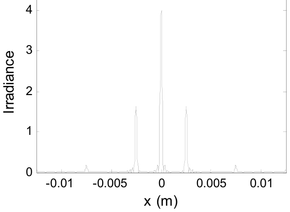
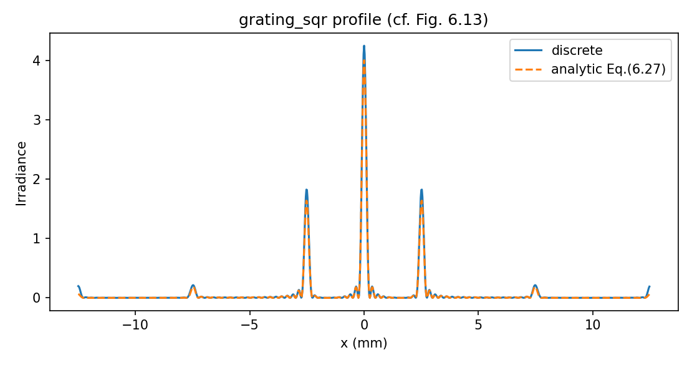
6.4.3 一维模型#
到这里为止的光栅都没有 y 方向的周期依赖。这种情况下,一维模型(\(y=0\))就能分析光栅响应最关键的 x 轴部分:删掉 y 相关项、不再需要 meshgrid、不再需要 repmat,夫琅禾费计算换成一维。一维建模的好处:能用更长的向量——更大的总宽度、跨光栅更多周期。
回到 grating_sqr,照上面改出一维版,新脚本叫 grating_sqr1D。取 \(M=2200\),物理参数定义全部不变(务必删掉第 19 行的 rect(Y1/D1))。二维 propFF 换成一维夫琅禾费:
注意一维前导因子是 \(1/\sqrt{\lambda f}\)——二维是 \(1/(\lambda f)\),维度减半开平方根。
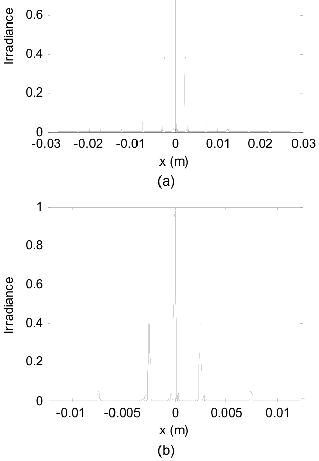
图 6.14:样本数增多让夫琅禾费图样的边长变大(\(L_2 = \lambda f/dx_1 = 0.055\) m,\(M=1000\) 时是 0.025 m);图 6.14(b) 的放大视图里,各阶的相对大小与位置和原结果(图 6.10)一致。整体幅度量级不同——一维模型不计第二维的功率。周期特征上样本更多,一维结果的 artifacts(小波纹)也比二维少。
原书笔误
6.4.3 节正文"The expanded view in Fig. 6.11(b) shows the relative size and position of the orders..."——放大视图是图 6.14(b),不是 6.11(b)(那是双波长剖面图)。
6.4.4 无限周期模型#
能不能仿真一个"无限大"的光栅?虽然不是实际器件,但光束照到光栅上覆盖成百上千个周期是常态——比前面仿真的都多。更重要的是:对无限支撑的光栅,(解析)衍射阶是 delta 函数,这些 delta 的乘子(权重)给出分到每一阶的相对光功率。做光谱分析时,通常希望一阶的衍射效率尽量高。
设光栅结构铺满阵列(\(D_1 = L_1\)),且整数个周期 \(P\) 恰好跨满阵列:
这个情形见图 6.15:求夫琅禾费图样的 DFT,其结果对应输入阵列的重复副本(周期延拓);既然源在阵列边界处完美连续,结果就是无限周期结构的变换——衍射阶位置上出现样本 delta 函数。
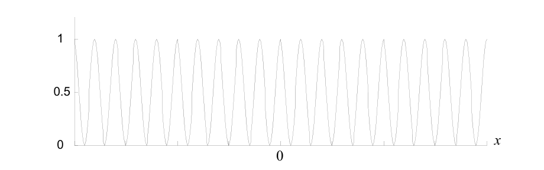
回到 6.4.1 的 grating_cos:设 D1=1e-2(即 \(L_1\))。\(L_1/P = 100\),阵列上恰好 100 个余弦周期。运行脚本,衍射阶位置上得到样本 delta 函数。要求每一阶的光功率分数:算观察面上每个样本的光功率(辐照度乘样本间隔面积),除以光栅透射的总功率(源场幅度平方在光栅面积上的积分)。grating_cos 的写法:
其中假定单位源场幅度。Fpwr 的显示见图 6.16:25% 的功率在零阶,±1 一阶各 6.25%。
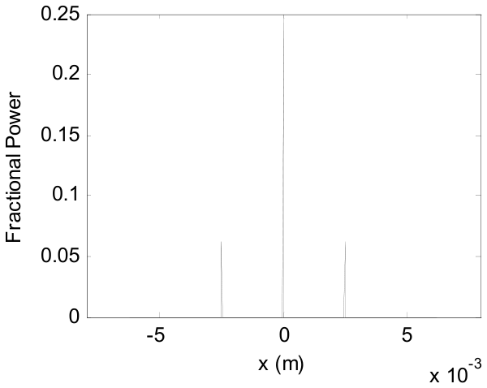
原书正文与代码口径不符(分数功率)
正文说"除以光栅透射的总功率(源场幅度平方在光栅面积上的积分)",但代码除以的是 \(L_1^2\)——单位入射场在光栅面积上的功率,即入射功率。振幅光栅 \(\frac{1}{2}(1-\cos)\) 的透过率平方均值只有 \(3/8\):数值实测总透射 = 0.3750(单位入射)。所以 25%/6.25% 是入射功率分数(合占 37.5%,其余 62.5% 被振幅光栅吸收);若按正文口径除以真实透射功率,零阶应占 66.7%、±1 阶各 16.7%。用哪个口径取决于问题,但书两处说法必须选一个。
无限周期模型对采样极其敏感,正好拿习题 6.6 数字化一下:每周期样本数 \(= M P/L_1\)(式 6.21 的倒数视角),必须是整数。grating_sqr 参数下即 \(M/100\):\(M=1002\) 时每周期 10.02 个样本,ucomb 落位漂移、各阶被打散——实测最强阶样本的功率分数从 \(M=1000\) 的 \(2.65\times10^{-5}\) 跌到 \(2.5\times10^{-7}\)(两个量级);\(M=1000\) 之上第一个可用的值是 1100(每周期 11 个样本,恢复到 \(2.19\times10^{-5}\))。
三种光栅模型放在一起对照:
| 2D 有限光栅(6.4.⅙.4.2) | 1D 模型(6.4.3) | 无限周期模型(6.4.4) | |
|---|---|---|---|
| 源场 | \(t_A\cdot\mathrm{rect}(x_1/D_1)\mathrm{rect}(y_1/D_1)\) | 去掉 y 向、无 meshgrid/repmat | \(D_1 = L_1\),\(L_1/P\) 为整数(式 6.28) |
| 传播 | propFF(\(z=f\)) | 一维夫琅禾费:前导 \(1/\sqrt{\lambda f}\) | propFF 同 2D |
| 衍射阶 | 宽度 \(\lambda f/D_1\) 的 sinc 瓣 | 同左,向量更长(更多周期) | 样本 delta(权重 = 阶幅度) |
| 功率口径 | 阶瓣内积分 | 同左 | 样本功率分数 Fpwr(= 入射口径) |
| 典型参数 | M=500(余弦)/1000(方波) | M=2200(\(P/dx_1=22\)) | M=500,100 个周期 |
| 用途 | 一般演示与验证 | 更大宽度/更多周期、少 artifacts | 衍射效率分析 |
把全章四类操作的"选哪个、查哪条判据"画成一张决策流程图(数值依据见各节实测):
6.5 习题(原书)#
原书 8 道题。每题给题目与提示,本章做过数值的题附 Python 实测结果——先自己动手。
6.1 倾斜判据的几何推导:图 6.17 画出场相对光轴以 \(\alpha\) 角传播的情形。场支撑 \(D_2\) 恰好伸到观察面边长的一半(\(L/2\))。用这个布局推导与式 (6.6) 相同的倾斜判据。假定临界采样与夫琅禾费传播;夫琅禾费传播下 \(D_2 = 2B_1\lambda z\)。
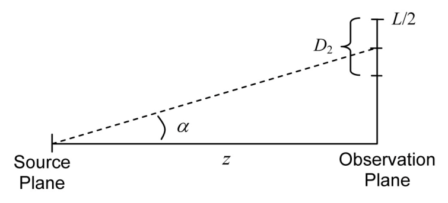
6.1 参考答案要点
倾斜把观察面上的支撑中心平移 \(z\tan\alpha\);支撑半径 \(D_2/2 = B_1\lambda z\)。"恰好伸到边缘"即 \(z\tan\alpha + B_1\lambda z = L/2\),整理 \(\tan\alpha \leq L/(2z) - \lambda B_1\)。临界采样 \(\Delta x_1 = \lambda z/L\) 给 \(1/(2\Delta x_1) = L/(2\lambda z)\),代入右边:。\(\lambda(1/(2\Delta x_1) - B_1)\)——与式 (6.6) 全同(小角下 \(\tan\alpha \approx \alpha\))。几何与频谱两条路殊途同归。
6.2 tilt + focus 同时演示:对 sqr_beam 例子同时加倾斜与聚焦,TF 方法,\(z = 2000\) m;\(\alpha = 5.0\times10^{-5}\) rad、\(\theta = 45°\)、\(z_f = 4000\) m。
6.2 参考答案要点(Python 实测)
两个透过率都是乘法,依次乘上即可(可交换):u1=tilt(u1,...); u1=focus(u1,...); u2=propTF(u1,...)。实测观察面质心 \((69.9, 69.9)\) mm——纯倾斜的平移量(\(70.7\) mm 分量)几乎不变,聚焦只改变斑的大小;峰值 8.1(仅聚焦、\(z_f=4000\) 时为 8.2)——\(z_f > z\),观察面在焦点前 2 km,斑比 \(z_f=z\) 时大。图 6-P6 右图。
6.3 柱面透镜:柱面透镜常用于把激光二极管的长椭圆形光束变得更圆。(a) 写一个**柱面聚焦(cylindrical focus)**函数(只在一个横向轴聚焦)。(b) 用 sqr_beam 演示,\(z_f = 2000\) m。© 柱面透镜焦面的辐照度一般能否像球面透镜的式 (6.18)/(6.19) 那样写成夫琅禾费图样?
6.3 参考答案要点(Python 实测)
(a) 把 focus 的 chirp 只作用在一个轴:uout=uin.*exp(-j*k/(2*zf)*(X.^2))(MATLAB 取 [X,~]=meshgrid(x,x),numpy 取 X,_——取错输出轴就聚焦到另一个方向了)。(b) 实测:观察面上 x 方向收到焦线(半高宽 8 mm),y 方向仍是衍射展宽(72 mm),见图 6-P6 左图。© 不能:柱面透镜只在一个轴上做傅里叶变换,另一个轴仍是菲涅耳传播行为,焦面场不是二维夫琅禾费图样(也不可分离成一个 FT 乘一个 FT——耦合在孔径上)。
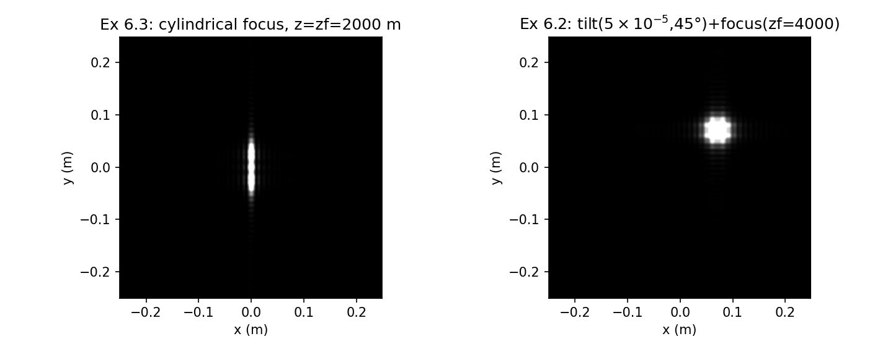
6.4 Airy 图样:(a) 生成图 6.7 那样的理想 f/10 透镜(\(f = 250\) mm、直径 \(2w_l = 25\) mm)Airy 图样;用 \(M = 250\)、\(L = 250\) mm、\(\lambda = 0.5\ \mu\text{m}\);推导解析结果并在剖面图上与仿真对比。(b) 演示缩小透镜瞳直径对焦面的影响。
6.4 参考答案要点(Python 实测)
解析:焦面场 = 圆瞳夫琅禾费图样,\(I_2(r) = (\pi w_L^2/\lambda f)^2\,[2J_1(v)/v]^2\),\(v = \pi D r/(\lambda f)\)。对拍:峰值 \(1.530\times10^7\) vs 解析 \(1.542\times10^7\)(0.76%),第一零点 6.0 vs 6.10 μm(见图 6-P3)。(b) 瞳减半:零点 12.2→13.0 μm(翻倍),峰值降为 1/16(面积比 ¼、主瓣宽 2 倍,功率摊薄)。
6.5 波带片(zone plate):波带片可用在玻璃等材料不透明的电磁波段;但为了什么?来看。考虑透过率函数
其中 \(r = \sqrt{x^2+y^2}\)。透过率图样见图 6.18。
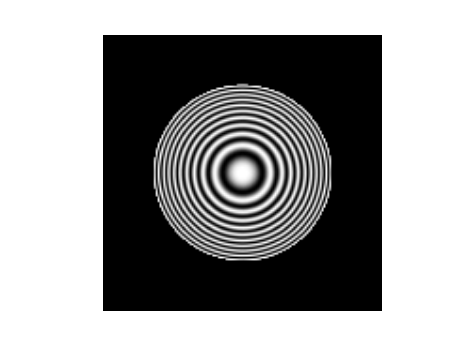
(a) 用复相量记号重写式 (6.29)。平面波照明这块板,透射场会怎么表现?(b) 推导把这块板画进离散阵列的采样判据(参考附录 A),并做菲涅耳传播仿真:单位振幅平面波照明、\(L_1 = 50\) mm、\(M = 500\)、\(\lambda = 0.5\ \mu\text{m}\)、\(w = 6.25\) mm、\(f = 10\) m(f 相对板半径取极大,是采样需要,也让观察面图样放大)。© 检验板的采样判据是否满足。(d) 检查 \(z = 10\) m 的传播采样:该用传递函数还是脉冲响应方法?(e) 仿真 \(z = 5, 8, 10, 12\) m 的辐照度图样,显示图样与剖面。另一种波带片:
其中符号函数
这块板的透过率是二值的(1 或 0),可以用悬浮不透明材料环带做成。(f) 仿真这块板并用同样参数重复 (e)(提示:MATLAB 自带 sign 函数)。(g) 比较两块板在焦面(\(z = 10\) m)的辐照度剖面,哪个效率更高?(h) 把波带片剖面与同样参数正透镜的焦面辐照度剖面比较。
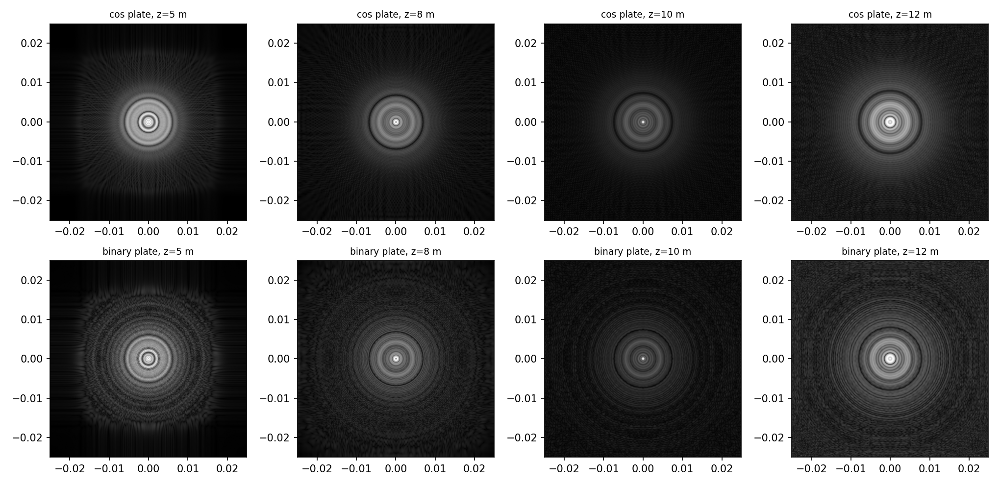
6.5 参考答案要点(Python 实测)
(a) \(\frac{1}{2}[1+\cos(\pi r^2/\lambda f)] = \frac{1}{2} + \frac{1}{4}e^{jkr^2/2f} + \frac{1}{4}e^{-jkr^2/2f}\)——平面波入射后:一半直通(零阶平面波)+ 四分之一发散(虚焦点 \(z=-f\))+ 四分之一会聚,聚焦在 \(z=f\)(还有高阶焦点,数值上可见)。(b) 板边缘 \(r=w\) 处 chirp 局部频率 \(w/(\lambda f) = 1250\) cyc/m,要低于 \(1/2\Delta x\)(附录 A 的 chirp 判据)。© \(1/(2\Delta x) = 5000\) cyc/m,满足且有 4 倍裕量。(d) \(z=10\) m:\(\lambda z/(L\Delta x) = 1\),临界采样,TF 与 IR 等价,选 TF。(e) 见图 6-P7:z=10 m 聚焦,两侧离焦。(g) 焦点峰值:余弦型 33.1、二值型 55.6——比值 1.68,接近理论 \((1/\pi^2)/(1/16) = 1.62\)(二值方波的 ±1 阶幅度 \(1/\pi\),余弦板 \(1/4\));二值型效率更高。(h) 同参数理想透镜(同 \(f\)、同口径)焦斑:峰值 603.3(理论 \((\pi w^2/\lambda f)^2 = 602\)),主瓣半高宽 0.400 mm 与波带片几乎相同——一级焦点 NA 相同;但波带片峰值低一个多量级,且残留零阶与高阶焦点背景。
6.6 周期函数的采样有多要命?:动手测!把 grating_sqr 例子的样本数改一下,比如 +2。发生什么?再试几个值(保证 M 仍是偶数,免得别的数值问题掺和)。\(M=1000\) 之上,周期函数再次被恰当采样的下一个值是多少?
6.6 参考答案要点(Python 实测)
每周期样本数 \(MP/L_1 = M/100\) 必须是整数。\(M=1002\):每周期 10.02 个样本,ucomb 落位漂移,各阶被抹开——最强阶样本功率分数从 \(2.65\times10^{-5}\)(M=1000)跌到 \(2.5\times10^{-7}\)。下一个可用值 1100(每周期 11 个样本,恢复到 \(2.19\times10^{-5}\);与 1000 不完全同值,因为 \(D_1/dx_1\) 的窗口采样也变了)。
6.7 相位光栅:与振幅光栅不同,理想**相位光栅(phase grating)**不衰减入射光,衍射来自跨光栅的周期性光程变化。反射光栅在电脑里就可以建模成相位光栅。改 grating_cos 或 grating_sqr 代码,计算下列透过率函数的夫琅禾费图样;调因子 \(m\)(例如 \(\pi\)、\(\pi/2\)、\(\pi/4\)),观察夫琅禾费图样的变化。
(a) \(t_A(x,y) = \exp\left[jm\cos\left(2\pi\dfrac{x}{P}\right)\right]\mathrm{rect}\left(\dfrac{x}{D_1}\right)\mathrm{rect}\left(\dfrac{y}{D_1}\right)\);
(b) \(t_A(x,y) = \exp\left\{jm\left[\mathrm{rect}\left(\dfrac{x}{P/2}\right) * \dfrac{1}{P}\,\mathrm{comb}\left(\dfrac{x}{P}\right)\right]\right\}\mathrm{rect}\left(\dfrac{x}{D_1}\right)\mathrm{rect}\left(\dfrac{y}{D_1}\right)\);
© \(t_A(x,y) = \exp\left\{jm\left[\Lambda\left(\dfrac{x}{P/2}\right) * \dfrac{1}{P}\,\mathrm{comb}\left(\dfrac{x}{P}\right)\right]\right\}\mathrm{rect}\left(\dfrac{x}{D_1}\right)\mathrm{rect}\left(\dfrac{y}{D_1}\right)\).
6.7 参考答案要点(Python 实测)
以 (a) 为例:\(e^{jm\cos\phi} = \sum_n j^n J_n(m)e^{jn\phi}\)(Jacobi–Anger),所以第 \(n\) 阶幅度是 \(j^nJ_n(m)\),零阶功率分数 \(J_0(m)^2\)。无限周期模型(\(D_1=L_1\)、\(L_1/P=100\))实测:总透射恒为 1.0000(相位光栅无吸收,与振幅光栅的 37.5% 对照鲜明);零阶分数 \(m=\pi\):0.1035(理论 \(J_0(\pi)^2 = 0.0926\),5 样本/周期的离散误差)、\(m=\pi/2\):0.2228(理论 0.2228,逐位)、\(m=\pi/4\):0.7253(理论 0.7253,逐位)。\(m\) 越小,能量越集中在零阶;\(J_0\) 的第一个零点 \(m \approx 2.405\) 时零阶完全消失。(b)© 把余弦相位换成方波/三角波相位,阶结构与 6.4.2 的方波权重 \(\mathrm{sinc}(n/2)\) 对应,调 \(m\) 观察零阶—高阶之间的搬移。
6.8 三角波光栅:考虑如下光栅透过率函数:
(a) 在一维仿真里实现这块光栅,计算夫琅禾费图样。光栅频率 500 lines/mm【\(P = (1/500)\times10^{-3}\) m】、\(D_1 = 0.1\) mm、\(\lambda = 0.5\ \mu\text{m}\)、\(f = 0.5\) m;向量长度与其他采样参数自选。【提示:每个三角函数上跨偶数个样本——比如 8——效果很好。】(b) 推导该光栅一维夫琅禾费图样的理论结果,与 (a) 的数值对比。© 用无限周期模型实现该光栅。画夫琅禾费图样剖面,画功率百分比结果。
6.8 参考答案要点(Python 实测)
(a) \(dx = P/8 = 250\) nm(每三角 8 样本)、\(M = 4096\)、\(L_1 = 1.024\) mm。(b) \(\mathfrak{F}\{\Lambda(x/(P/2))\} = (P/2)\mathrm{sinc}^2(Pf_X/2)\),阶权重 \(\propto \mathrm{sinc}^2(n/2) \geq 0\)(方波是 \(\mathrm{sinc}(n/2)\),可负——三角波各阶无 \(\pi\) 相位翻转,这就是"闪耀"结构的好处);解析 \(U_2 \propto \frac{D_1}{2\sqrt{\lambda f}}\sum_n \mathrm{sinc}^2(n/2)\,\mathrm{sinc}\left[\frac{D_1}{\lambda f}(x_2 - n\lambda f/P)\right]\),阶位 \(\pm\lambda f/P = \pm125\) mm(\(\pm1\) 阶)、\(\pm375\) mm(\(\pm3\) 阶);数值 vs 解析最大相对差 2.2%(图 6-P8)。© 无限周期模型(\(L_1/P = 512\) 整数):阶退化为样本 delta,分数功率实测零阶 0.2500(理论 \(|c_0|^2 = 0.25\))、±1 阶 0.0455(理论 \(|c_{\pm1}|^2 = 0.0411\)),总透射 0.3438 = \(\langle t^2\rangle\)(振幅光栅,其余被"吸收")。
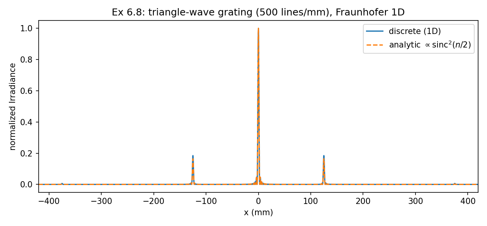
坑与陷阱#
circ 的两套约定:式 (6.13)/(6.29) 按 Goodman,表 1.2 按半角
书正文式 (6.13) \(P=\mathrm{circ}(r/w_L)\) 与式 (6.29) \(\mathrm{circ}(r/w)\) 里,宗量分母就是半径(Goodman 约定,附录 C.1 代码 out=abs(r)<=1 印证);表 1.2 的印刷定义却对应"分母 = 2×半径"(ch1 勘误)。照表 1.2 抄实现,孔径直接大一倍。本笔记统一:base.circle(X, Y, R) 传半径——透镜瞳 circle(X,Y,wL),波带片 circle(X,Y,w)。
B₁ 口径:98 还是 117.3?
6.⅙.2 节的判据代入了 \(B_1 \approx 98\) cycles/m 并称其来自式 (5.10),但式 (5.10) 是 \(5.98/w = 117.3\);98 = 5/w(2.2 节口径)。影响具体数值:倾角上界 7.6e-5(书)vs 6.6e-5(按 117.3),焦距下界 671 m(书)vs 768 m。做仿真时先声明自己用哪个口径,再谈"贴近边界"。
tilt/focus 的带宽判据是近似的,方向别记反
式 (6.5)/(6.10) 把透过率与传播器的相位作用当成"带宽直接相加",忽略了两者可能互相抵消(书评注 a)。短距 regime(\(\Delta x > \lambda z/L\))用 \(1/2\Delta x_1\),长距 regime(\(\Delta x < \lambda z/L\))要换成 \(L_1/(2\lambda z)\)(评注 c)——与第 5 章表 5.1 的两套带宽限制一脉相承。
周期函数采样:P/dx₁ 必须是整数
ucomb 靠"坐标是整数"落 delta(六位舍入只是防噪声),所以每周期样本数 \(MP/L_1\) 必须是整数,否则 comb 落位漂移、衍射阶被打散(实测 M=1002 使最强阶功率分数掉两个量级)。此外:跨 rect 的样本数取奇数(与 rect 的 ½ 边界值约定一致)、跨周期至少 2 个样本。改 M 之后这三条都要重查(习题 6.6)。
无限周期模型的分数功率是入射口径
Fpwr=I2*dx2*dx2/(L1^2) 的分母是单位入射场的功率;书正文却写"除以光栅透射的总功率"。振幅光栅 \(½(1-\cos)\) 的真实透射只有 37.5%:25%/6.25% 是入射分数,按透射口径应为 66.7%/16.7%。读衍射效率文献时先问一句:"效率相对什么归一?"
propFF 算透镜焦面:z 换成 f,且各波长网格不同
焦面场 = 入射场取 \(z=f\) 的夫琅禾费图样(式 6.18),用 propFF 时把传播距离参数填 \(f\),别再套一层 focus。propFF 返回的观察面边长 \(L_2 = \lambda f/\Delta x_1\) 随波长变(0.5 μm → 12.5 mm,0.6 μm → 15.0 mm):双波长剖面必须各用各的 x2 轴(书特别提醒),像本章 Python 里那样分开存 I2p5/x2p5。
式 (6.25) 的 1/P 与卷积定标
方波 = \(\mathrm{rect}(x/(P/2)) * \frac{1}{P}\mathrm{comb}(x/P)\):漏掉 \(1/P\),各阶权重整体错 \(P\) 倍。书代码的 FFT 卷积不再乘任何定标:ifft 已为一次 fft 定标,单位样本 delta 的"面积 \(1/dx_1\)"恰好抵消第二个 fft 的 \(dx_1\)——两句话合起来才是"不用定标"的完整理由,只记一句会在别的卷积里翻车。
meshgrid 取错输出,柱面聚焦换方向
柱面聚焦(习题 6.3)chirp 只作用在 x 上:numpy 要 X, _ = np.meshgrid(x, x)(第一输出沿列变),MATLAB 要 [X,~]=meshgrid(x,x);取成第二输出,y 方向就被聚焦了(实测:X 取错时焦线从"竖"变"横")。2D 的 focus/tilt 因为 \(x,y\) 对称或参数自由,取错不容易发现——柱面是最容易暴露这个坑的探针。
速览#
- 三种透过率全是"乘进入场":tilt \(e^{jk\hat{s}\cdot\vec{r}}\)(式 6.3)、focus \(e^{-jkr^2/2z_f}\)(式 6.9)、透镜 \(P\cdot e^{-jkr^2/2f}\)(式 6.12);光栅是周期化的振幅/相位结构(式 6.20/6.25/6.29)。
- tilt = 频谱平移 \(\tan\alpha/\lambda\)(式 6.4/6.5);判据 \(\alpha \leq \lambda(1/2\Delta x_1 - B_1)\)(式 6.6),sqr_beam 例子约 \(7.6\times10^{-5}\) rad——典型仿真的可用倾角极小,与菲涅耳传播的傍轴本性一致。
- focus 的球面→抛物面近似(式 6.7→6.8);判据 \(|z_f| \geq (D_1/2\lambda)(1/2\Delta x_1 - B_1)^{-1} = 671\) m(sqr_beam,\(B_1=98\));\(z_f=-671\) 发散推过边界、\(+671\) 先聚焦。
- \(z_f = z\) 时 focus+propTF 与 propFF 逐点相等(实测 \(5\times10^{-16}\))——"缩放夫琅禾费"是精确陈述。
- 透镜焦面 = 夫琅禾费图样(\(z\to f\),式 6.18):小 \(f/\#\) 用 propFF,别硬扛菲涅耳(f/10 要 \(M\geq5000\),式 6.16/6.17);圆瞳焦面 = Airy 图样,峰值 \((\pi w_L^2/\lambda f)^2 = 1.54\times10^7\),零点 \(1.22\lambda(f/\#) = 6.1\ \mu\text{m}\)。
- 前焦面安排(式 6.19)= 纯缩放 FT(chirp 消失),瞳宗量 \((x_1+x_2, y_1+y_2)\) 计入渐晕。
- 光栅三档模型:2D 有限(propFF + 式 6.24/6.27 解析)、1D(前导 \(1/\sqrt{\lambda f}\),M=2200)、无限周期(\(L_1/P\) 整数,阶 = delta,分数功率 Fpwr);余弦光栅零阶 25%、±1 阶各 6.25%(入射口径)。
- 周期采样铁律:每周期样本数 \(MP/L_1\) 为整数(ucomb 落位)、跨 rect 奇数个样本;M=1002 实测阶功率掉两个量级,下一个可用 M=1100。
- 相位光栅不吸收(总透射 1):零阶 \(J_0(m)^2\)(π/2、π/4 档逐位吻合);振幅光栅吸收(\(\langle t^2\rangle = 3/8\))。二值波带片一阶效率 \((1/\pi)^2\),比余弦型 \((1/4)^2\) 高 1.62 倍,但都远低于理想透镜(同 NA 主瓣同宽,峰值差一个量级)。
- 勘误六处:B₁=98 与式 5.10 矛盾、图 6.6 双 (b)、sqr_grating→grating_sqr、Fig.6.11(b)→6.14(b)、习题 6.5(a) 式号、分数功率口径。
术语速查#
| 英文 | 中文 | 一句话 |
|---|---|---|
| transmittance function \(t_A\) | 透过率函数 | 乘进入场制造倾斜/聚焦/周期结构的复函数 |
| tilt | 倾斜 | 线性相位;频谱平移 \(\tan\alpha/\lambda\);瞄准点 \(r=z\tan\alpha\) |
| beam aiming point | 光束瞄准点 | 观察面上光束被 tilt 指到的地方(图 6.2) |
| focus / defocus | 聚焦 / 发散 | 负/正 chirp(式 6.9);\(z_f<0\) 为虚焦点 |
| pupil function \(P(x,y)\) | 瞳函数 | 透镜开口;最常见圆瞳 circ(r/w_L)(式 6.13) |
| focal length / f-number | 焦距 / f 数 | (f/# = |
| Airy pattern | Airy 图样 | 圆瞳夫琅禾费图样;\([2J_1(v)/v]^2\) |
| front focal plane | 前焦面 | 物在前焦面 → 焦面为纯缩放 FT(式 6.19) |
| vignetting | 渐晕 | 离轴点被有限瞳截光;瞳宗量 \((x_1+x_2, y_1+y_2)\) |
| diffraction grating | 衍射光栅 | 周期结构分光;阶位置 \(n\lambda f/P\) |
| zero / first order | 零阶 / 一阶 | 中央未偏折分量 / ±1 一阶峰(分光用) |
| grating period \(P\) | 光栅周期 | 每周期样本数 \(MP/L_1\)(式 6.21)须 ≥2 且落位整 |
| ucomb | 单位样本梳 | 整数坐标置 1,六位舍入(附录 C.5);\(P/dx_1\) 须整数 |
| infinite periodic model | 无限周期模型 | \(D_1=L_1\)、\(L_1/P\) 整数;阶 = delta,权重=阶幅度 |
| fractional power | 分数功率 | Fpwr = I·dx²/L₁²(入射口径!);零阶 25%、±1 阶 6.25% |
| zone plate | 波带片 | 啁啾环带 \(½[1+\cos(\pi r^2/\lambda f)]\)(式 6.29);X 射线等波段代透镜 |
| phase grating | 相位光栅 | 只改相位不吸收:总透射 1,零阶 \(J_0(m)^2\) |
| diffraction efficiency | 衍射效率 | 分到某阶的功率分数;先问归一到入射还是透射 |
| shift theorem | 移位定理 | 线性相位 ↔ 频谱平移(式 6.4);tilt 的全部原理 |